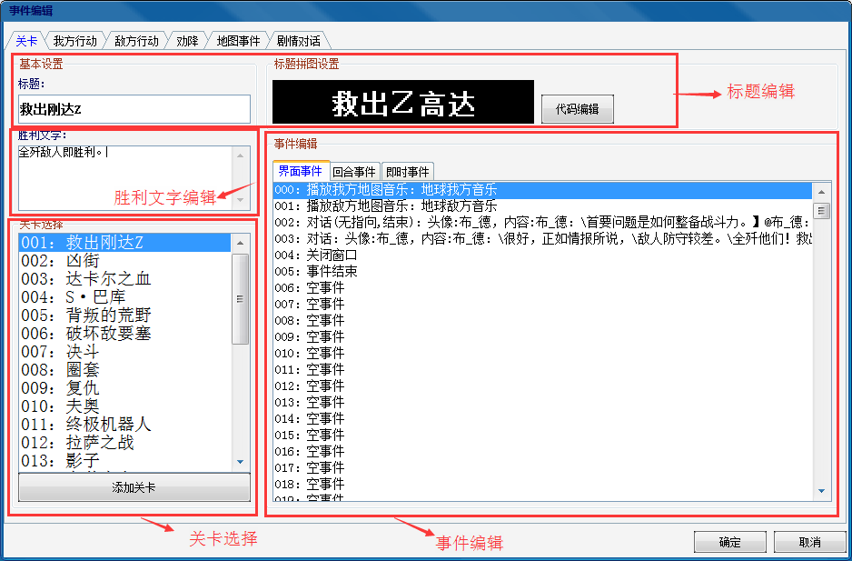
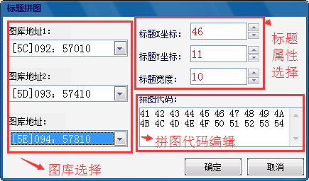

功能区域分布：

1.关卡选择：选择左下列表框中的项，即可选择相应的关卡，其他区域则会显示关卡的标题、胜利文字、事件信息。
2.标题：标题文字由修改器直接读取预设的文本进行显示的，方便修改者自行进行预先的标题记录，关卡实际标题在右上黑框中显示（直接读取图像数据进行显示）
3.标题编辑：选择代码编辑按钮可弹出关卡标题编辑的对话框。

一个关卡标题共有三个图库可供选择，一个图库为64个图库，总计为192个图块，其图块对应的编号分别为00-BF，右下的拼图代码显示的则为组成标题的图块的图块号。如需更改标题，首先选择标题所在的三个图库，再设置标题的属性，每个文字的宽度为2。
4.胜利文字修改：胜利文字由修改者决定的对于关卡胜利或者失败条件的提示。直接输入文字可进行更改，需要注意的是换行符号为@，如不换行在胜利目标文字过多的情况下则会出现花屏的情况。例如我们现在需要一个名为“阿姆罗被击落即失败，击落巴尔昂即�倮�！”的胜利文字，那么我们可以这样输入“阿姆罗被击落即失败，@击落巴尔西昂即�倮�！”